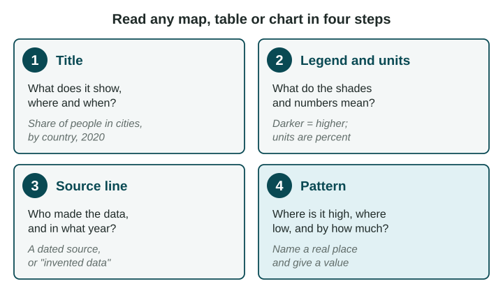

Almost every question on the AP® Human Geography exam that comes with a map, table or chart can be answered by reading it carefully. Most lost points come from skipping a step: looking at the colors before the legend, or describing a pattern without naming a place. This page gives you one routine for every figure.
Start with the title

The title tells you three things: what is measured, where and when. "Total population of South Asian countries, 2024" tells you the measure (people), the places (the countries of South Asia) and the date. If any of the three is missing, look for it in the legend or the source line before you go on.
Read the legend and the units
A legend is the box that says what each shade, symbol or line stands for. On a shaded map, the legend splits the values into groups called classes, such as "under 10 million" or "1 billion or more". Read the classes from lowest to highest so you know which way the shades run.
Then check the units. There are three common kinds:
| Kind of number | Example | What it lets you say |
|---|---|---|
| Total (a count) | 1.4 billion people | How much there is in all. Big places usually have big totals. |
| Percent (a share) | 35% of people live in cities | How much out of every 100, so places of any size can be compared. |
| Rate (per some number) | 4 hospital beds per 1,000 people | How much for each 1,000 people (or each square kilometer), so places of any size can be compared. |
Here is why this matters. On a map of South Asia shaded by total population, India is the darkest country, because it has more than a billion people. Bangladesh is a class lighter. Yet Bangladesh is the more crowded of the two: it fits far more people on each square kilometer of land (UN World Population Prospects 2024). A totals map answers "how many?", not "how crowded?". To judge crowding you need a rate: people for each square kilometer.
Check the source line
A source line names who made the data and the year: "UN World Population Prospects 2024, 2024 estimates". The year matters because numbers like population change every year. A good source is an organization that collects data carefully, such as a United Nations agency, the World Bank or a country's statistics office. Some practice figures in this course say "Invented data for practice": the numbers are made up so you can practice reading, and they say nothing about the real place.
Tables and charts
In a table, read the column headers first: each one names a measure and its unit. Each row is one place or one year. Compare down a column to compare places.
A line chart shows change over time: years along the bottom, the measure up the side. A change over time is a trend. Describe it with three things: its direction (rising or falling), its dates and its size. "River Town grew from about 20,000 people in 1990 to about 50,000 in 2020" is a full trend. "It went up" is not.
A chart shows what changed, not why. If a question asks why, the answer needs a reason from another source, or from what you know about the place.
Describe the pattern with places and values
A pattern says where values are high, where they are low and by how much. Always name a place.
| Weak (earns nothing) | Strong (earns the point) |
|---|---|
| "Some countries have more people." | "India has over 1 billion people, while Bhutan has under 10 million (UN, 2024)." |
| "It went up." | "River Town grew from about 20,000 to about 50,000 people between 1990 and 2020." |